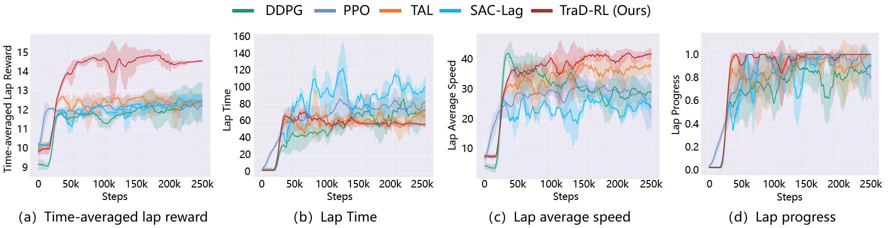
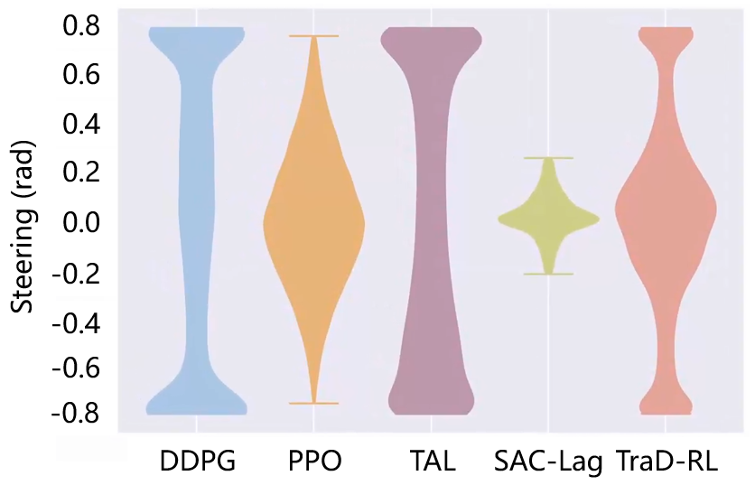
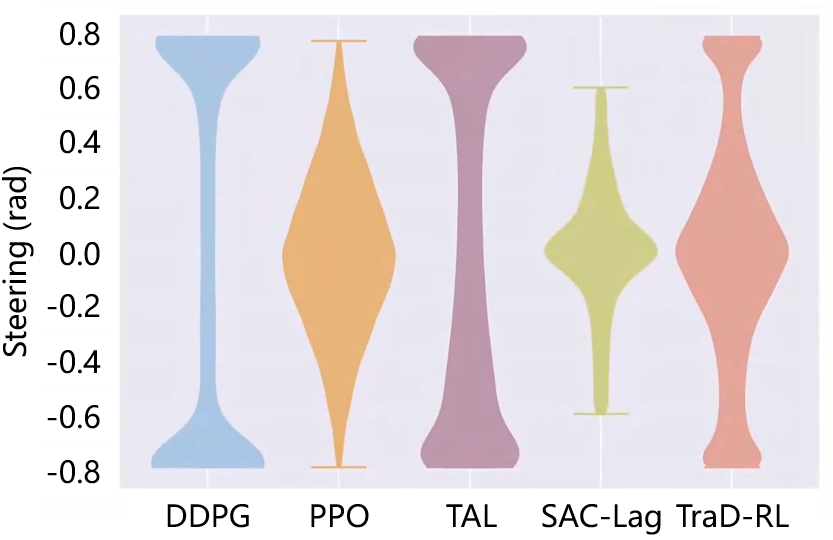
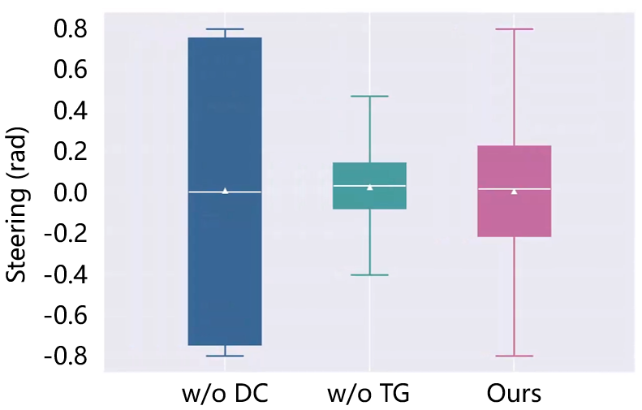

Experiments
We evaluate TraD-RL in two autonomous racing scenarios: the Berlin Tempelhof Airport Street Circuit and the Modena Racetrack. The agent is trained on the Berlin racetrack and evaluated on both tracks to assess racing performance, dynamic stability, and cross-track generalization capability.
Training Results
The training curves compare the learning performance of different reinforcement learning methods in terms of lap reward, lap time, lap average speed, and lap progress. The results show that TraD-RL achieves stable convergence and improved racing performance by combining MCRL-based trajectory guidance with explicit dynamics constraints.

Testing Results
The testing results further analyze the distributions of vehicle dynamic states and control inputs, including yaw rate, sideslip angle, longitudinal acceleration, and steering angle. These metrics are used to evaluate whether the learned policy can maintain a favorable balance between high-speed racing performance and vehicle dynamic stability.
Berlin Racetrack

(a) Yaw Rate

(b) Sideslip Angle

(c) Longitudinal Acceleration

(d) Steering
Modena Racetrack

(a) Yaw Rate

(b) Sideslip Angle

(c) Longitudinal Acceleration

(d) Steering
Ablation Study
To validate the contribution of the key modules in TraD-RL, ablation experiments are conducted by removing the trajectory guidance module or the dynamics constraint module. The results demonstrate that trajectory guidance improves racing performance, while explicit dynamics constraints suppress excessive control fluctuations and reduce unstable dynamic responses.
Berlin Racetrack

(a) Yaw Rate

(b) Sideslip Angle

(c) Longitudinal Acceleration

(d) Steering